I made it up to Basel, and spent a couple of days there. A loop through Germany and a loop through France were nice, too. Now I'm ready for my week in L.A., on the way to Senegal!
Hiking around Holderbank
Holderbank is in the middle of a natural park, with hiking trails all around, so I spent my day there hiking. It was a good 7 hour hike through the hills, with truly breathtaking scenery.

Riding down to Basel
The trip to Basel was a climb of about 50 meters, followed by about 600 meters of descent, spread over maybe 20km. Wheeeee! Also, Brrrr! I'm glad I got that American Heritage Collegate Division Brooklyn NYC sweatshirt the other day… It was about 10 degrees (50 F), and I didn't need to pedal for a good hour.
I went to St. Louis, France, which is just over the border. Food and lodging are a lot cheaper in France, and it's only 3km to the center of Basel. Besides, I'm mostly going to be bicycling around, and it's nice to be out of the center of town.
 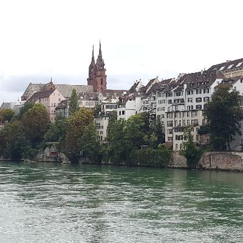
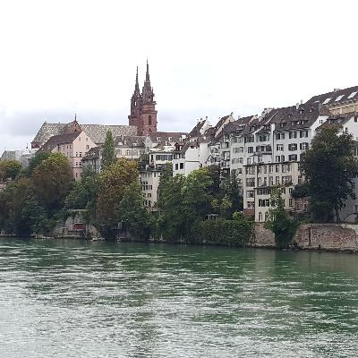
Germany and the Black Forest
I had three nights at an absolutely lovely Airbnb near Basel, which gave me two days to bike around. I guess I could have seen Basel, but it was the last two days of me having a bicycle, and I wanted to make the most of it. For day one, it was Deutschland über alles. I went north along the Rhine next to France, and then east up through the Black Forest, returning along the Rhine where it borders Switzerland.
In Germany, the owner/cook (I think) at a little hotel/restaurant had me going. He spoke English and knew I didn't speak German, but when I said I'd need some help understanding the menu, he grunted and moved on. His wife (I think) came to take the order, and she spoke neither French nor English. She went away saying what I'm sure was “Men! I knew he shoud have come out to translate. What are you going to do?”
A little later, he came out and said “Unacceptable! Coming to a country and speaking not a word! When I go to a country, I learn at least a few words; a minimum.” He deadpanned it perfectly. Realize, we're close enough to France that my cellphone was still on the French network. I asked, “Are you serious? You're annoyed?” He said “no,” but didn't change expression, so I though it might have been a “no, it's not OK,” and not “no, I'm not annoyed.” He was joking, but he held the tension for a pretty impressively long time!
 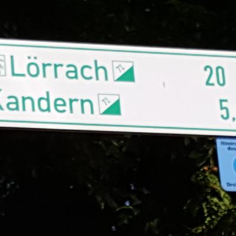
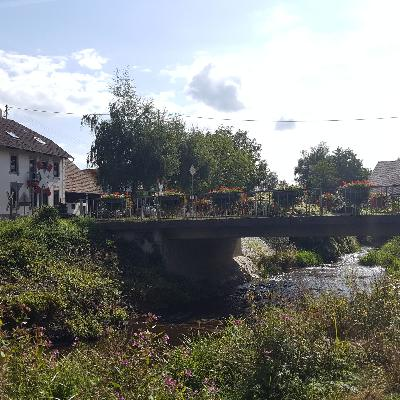
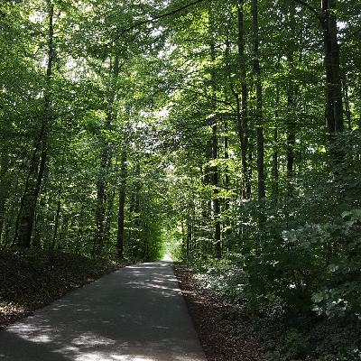
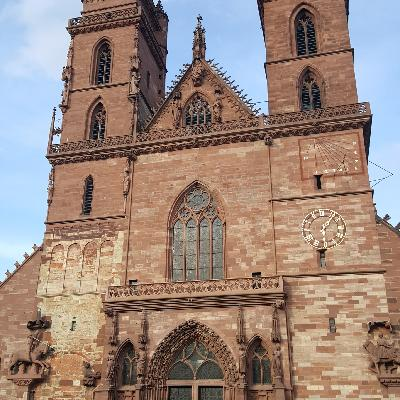
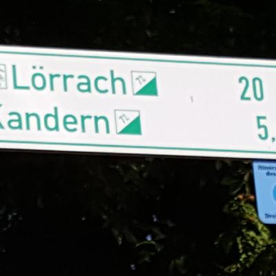
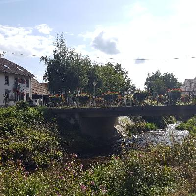
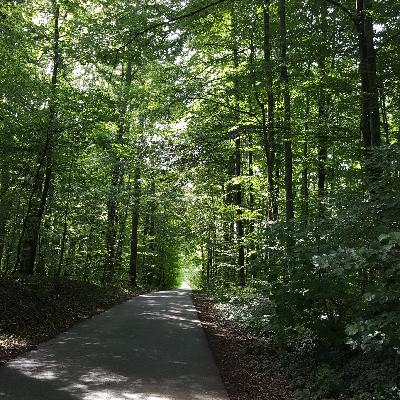
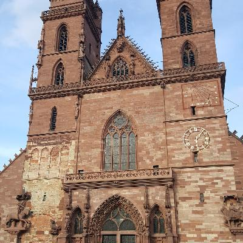
Looping through France to Mulhouse
For my final day of touring, I took the bike path along the canal up to Mulhouse. Mulhouse isn't on the tourist map, but it has a pleasant enough downtown. I tried to loop back on the other Eurovelo route, but it wasn't well signposted, and went through a bunch of towns on shared roads, so I turned around and went back along the same canal path. It was a nice 80 km round trip to finish up my bicycle touring.
Back to Geneva
Next, I took the train back to Geneva. It was about seventy-five bucks for me, and twenty-five for the bike, and had a connection in Biel/Bienne. It was kind of fun doing in three hours what I spend a week doing the other direction, but the bike ride was more interesting.
I stayed in Fernay-Voltare, on the French side of the border, because again, it's a lot cheaper. I had a wonderful Airbnb with a gentleman from the Ivory Coast who works for the UN.
I also had a bit of Peace Corps excitement. It seems that too many of us passed legal and medical clearance for Senegal, so it was over-subscribed. The country director called and asked if I'd be willing to go to The Gambia on October 7, or Guinea two months later. After a day of browing around and reading up on The Gambia, I said “OK” to that, but no to Guinea. Among other things, I'm homeless! In the end, though, The Gambia filled up too, so I'll be going to Senegal, as originally planned.
I'm glad that 15 euros I spent having cellphone service for two months paid off! OK, I did use it for making reservations and such too, but most of the calls I got were wrong numbers, for some guy named Eamon who probably had the number before me.
CERN, and bicycle delivery
I had a day in Geneva, so I went out to CERN, to take a gander at some muons and neutrinos. CERN, the European Center for Nuclear Research, is the particle accelerator that straddles the Swiss/French border. I was hoping to find out when they're going to make a black hole that destroys the solar system and all life as we know it, but they didn't have an exhibit on that. I guess they're planning to surprise us.
 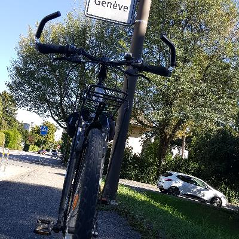
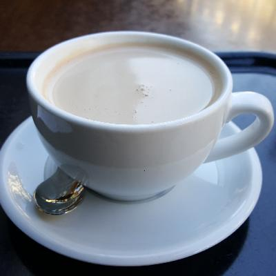
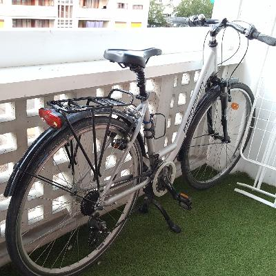
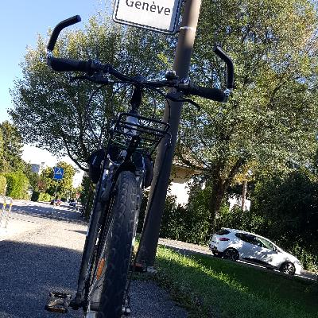
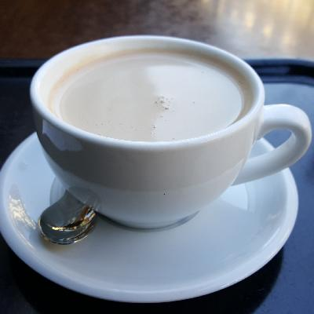
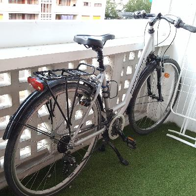

Goodbye, Europe!
Well, that was quite a trip! It's a little unreal to be going back to L.A., especially since it's just for a week.
I don't know that I have any cosmic insights or anything.
This kind of bicycling has a certain zen-like quality; my
mind was occupied, but I never really felt busy. It was an
absolutely lovely way to spend a couple of months. It
was mostly about simple things, like the feeling of
bicycling along on a crisp morning, watching the scenery
go by and looking forward to a picnic lunch.
There is a certain feeling of accomplishment from going what I think was about 2000 km (maybe 1400 miles?) Part of why I did this was to sort of prove to myself that I can still do something semi-athletic. In that, I was certainly successful. All the hiking and bicycling has me feeling really confident about my physical shape, even though my walking is still (and will always be) compromised. So that's a nice outcome, and worth the price of admission!
I defintely didn't see all the tourist sites, or do a bunch of wild stuff. Inded, all the exercise had me sleeping maybe 9-10 hours a night (maybe an hour more than my normal pattern). I could see myself doing this again. Maybe a trip from France up to Scandinavia, after Peace Corps? If I do, I'll definitely skip the tent and the sleeping bag :-)